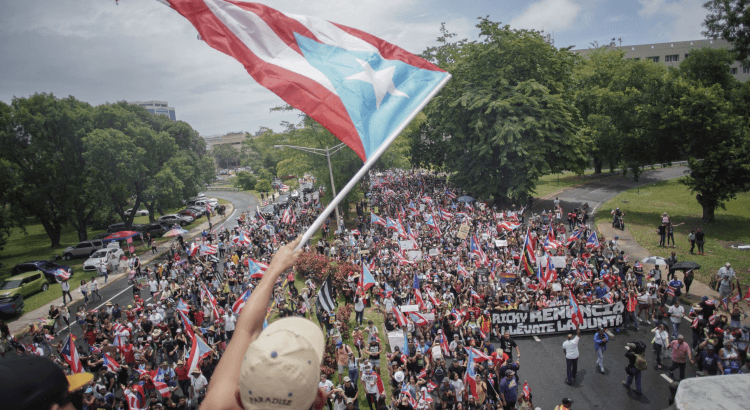
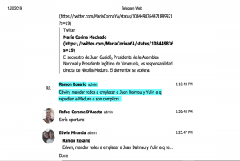

Who is in Charge Here?Rosselló Resignation Brings Succession Questions
Who wants to be Governor of Puerto Rico?With embattled incumbent Ricardo Rossello having resigned the office over the 'Rickyleaks' text messaging scandal, and set to leave office August 2, the woman who would be next in line doesn’t want the job.The people who chased him out of power don’t seem to want her either.This has sparked a minor succession crisis on the island and U.S. Commonwealth, and given all of us a lesson in Puerto Rican civics.Meanwhile, more details are emerging about what happened behind the scenes of the Rossello administration and his pro-statehood New Progressive Party.
Rossello’s successor would have been Secretary of State Luis Rivera Marin.However, he resigned before Rossello did, due to his involvement in the scandal.The office would then go to the Justice Secretary, but Wanda Vazquez Garced tweeted Sunday, in no uncertain terms, 'I have no interest in occupying the position of governor.'Vazquez later clarified Monday that she would assume the office, if she had to, but would still rather not.The Secretary of State’s office has been vacant for two weeks, and it’s Vazquez’s hope that Rossello appoints a new one on his way out the door.
Next up, in what NPR podcast editor Luis Trelles calls 'a complicated game of musical chairs,' would be the commonwealth’s Treasury Secretary.However, Rossello fired Raul Maldonado last month, after comments he made to a local radio station.His successor, Francisco Pares Alicea, 31, is too young to become governor.That would leave another recent arrival, Eligio Hernandez Perez, who became Education Secretary when his successor, Julia Keleher, was arrested three weeks ago on corruption charges.The next person below him is also under 35.
Indeed, the same activists and protestors who chased Rossello from power, with the hashtag #RickyRenuncia, were armed and ready with another: #WandaRenuncia— 'Wanda Resign.'They attacked her close ties to Rossello, and frequent decisions not to investigate or prosecute cases of fraud, corruption, or mismanagement within the administration.There are also accusations that Vazquez launched an improper domestic violence probe against a political opponent.An investigation from the Atlantic Council’s Digital Forensic Research Lab also shows that Rossello and other Puerto Rican government officials may have played a role in encouraging troll accounts on Twitter to boost pro-government hashtags and target their opponents.
The island’s succession problem is not just a trivial matter to be debated by political science nerds.The ongoing uncertainty could have serious consequences for the territory and its people.Vital funds from the federal government, for hurricane relief and the island’s Medicaid program, are still in limbo.Congress would seem unlikely to deliver them if they don’t know who is in charge.The stunning fall from grace for Rossello, and other members of his New Progressive Party, may have also caused lasting damage, on and off the island, to a key tenet of the party platform: Puerto Rican statehood.Puerto Rico’s next governor, whoever they may be, and whenever they take office, won’t have long to bring an end to their long territorial nightmare or bind up the island’s wounds.Elections are coming next year, and it’s unlikely the public’s thirst for change will be quenched by then.
[bsa_pro_ad_space id=4]
Posted On: 2019-07-30T00:00:00
Posted By: Robert Martin (CN Staff)





Content Date: 2019-07-30
Download Date: 2021-07-09
Document ID: L0C04DP2S